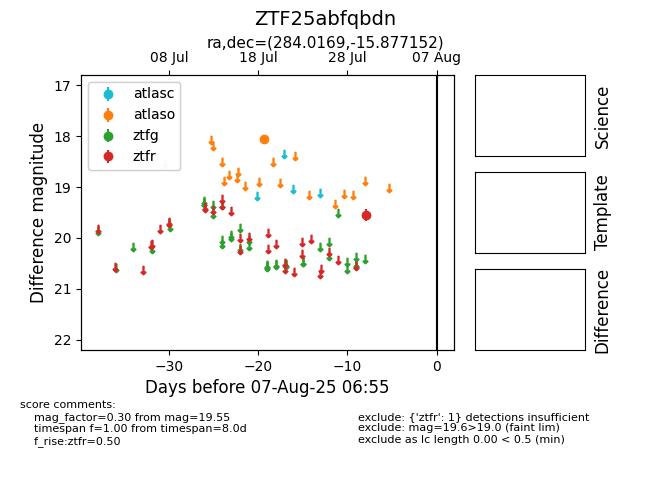

Target ZTF25abfqbdn at 2025-08-07 07:30, see:
FINK: fink-portal.org/ZTF25abfqbdn
Lasair: lasair-ztf.lsst.ac.uk/objects/ZTF25abfqbdn
ALeRCE: alerce.online/object/ZTF25abfqbdn
alt names
ZTF25abfqbdn (ztf,fink)
coordinates:
equatorial (ra, dec) = (284.0169,-15.87715)
galactic (l, b) = (19.2210,-8.16575)
photometry
last atlaso=18.05, ztfr=19.55
1 atlaso, 1 ztfr detections
